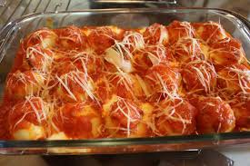

Nhoque Recheado
Autor: Silvia Martins

Nhoque Recheado com Queijo.
Tempo de Preparação: 120 minutos
Rendimento: 5 porções
Informação Nutricional:
500 kcal,
60 g
Ingredientes:
-
1 kg de batata holandesa
-
2 ovos
-
2 colheres (sopa) de manteiga sem sal
-
1 1/2 xícara de farinha de trigo
-
Sal a gosto
-
Manteiga para enrolar a massa
-
1 xícara de queijo mussarela em cubinhos
-
2 ovos
-
3 dentes de alho picado
-
1 xícara de nozes, picadas
-
20 folhas de manjericão
-
1/2 xícara de azeite de oliva extravirgem
-
1 xícara de queijo parmesão ralado
Modo de Preparo:
1. Coloque as batatas descascadas com água em uma panela e cozinhe-as até amolecerem.
2. Retire e passe-as quentes pelo espremedor. Deixe esfriar.
3. Junte ao purê já frio de batatas a manteiga, os ovos, o sal e a farinha de trigo aos poucos, até que a massa desprenda da mão e fique firme para modelar.
4. Passe um pouco de manteiga nas mãos e faça bolinhas de massa. Faça uma aberturinha e coloque um cubo de mussarela em cada bolinha de nhoque. Torne a fechar bem.
5. Vá colocando os nhoques em uma superfície lisa e enfarinhada. Ferva bastante água em uma panela e vá colocando, aos poucos, os nhoques para cozinhar.
6. Deixe-os no fogo até subirem à superfície. Retire-os com uma escumadeira e coloque-os em uma travessa. Reserve.
Molho:
1.No processador ou no liquidificador, coloque o azeite e as folhas de manjericão e forme um caldo verde grosso.
2. Refogue o alho e as nozes em uma frigideira com um fio de azeite. Deixe em fogo baixo e mexa até ficarem dourados.
3. Acrescente às nozes o caldo de manjericão e, por último, o parmesão ralado. Despeje o molho sobre os nhoques e sirva.
71 pessoas avaliaram essa receita
...